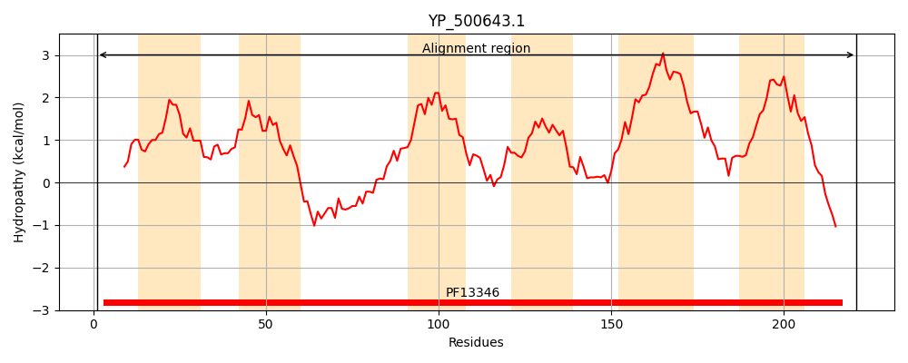
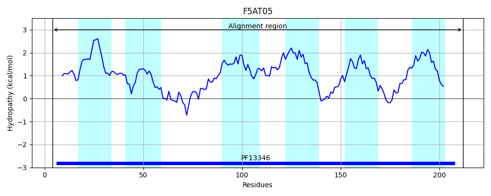
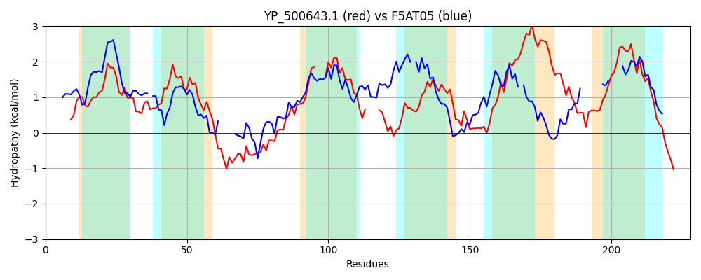

Hit Accession: F5AT05
Hit TCID: 3.A.1.149.1
Hit Description: gnl|BL_ORD_ID|4308 gnl|TC-DB|F5AT05|3.A.1.149.1 ABC-transporter OS=Bacillus thuringiensis PE=4 SV=1
Mach Len: 228
e:0.000009
Query TMS Count : 6
Hit TMS Count: 6
TMS-Overlap Score: 4.700000
Predicted Substrates:None
BLAST Alignment:
Score: 104 , Bit scores: 44 bits, E-value: 8.9e-06, Alignment length: 228, Percentage identity: 23
Query: 1 MKALLIRNFKLRRYTLIIYVLLLTLYPFYIMLDSTKFFYLLQSFISPTILIIWILDAGHLFRLNRRLGGNDSYYFYMSLPVSKKQLLNANYITCIV---LTLIGTLVISLYAYE----ADVIEPNSIYFSTAYAFVISNFLSIPIAFSQFTELRRVKVPYGIYVFTIIILVPFLFSIAIVLVNYFVLSQSSFPDLYSYILNIGFLIISIVILIVNYFKQLNKINTRKF 221
M A+L ++ + + L+I +L ++P +++D YL+ SF+ P I + + + D F LP++ +++ YI IV L+ + ++ LY A +I N + FS A +LS+ + + + I V T I L +F+I I ++N+ S S YI +ISI++L + Y + + KF
Sbjct: 4 MFAILKKDILINQKYLLIVLLYSIIFPVILIIDGDNK-YLMMSFLLPFINVNFFVGKSCYIE-----DSVDVRNFLKMLPINHNKIVFIRYIEMIVTLALSSVYAFLVQLYLMNGVSNAFLIHVNLLVFS-ALLIYFGIYLSVYYKINYHAAQNTLMFLFVIGVSTFI-LTEKVFNIKIEMINHLNYSAS-------YIA----FVISIIVLSITYLYSIKEFKFNKF 212 | Protein Hydropathy Plots: |
|---|
|  |  |
Pairwise Alignment-Hydropathy Plot:
|
|---|
|  |